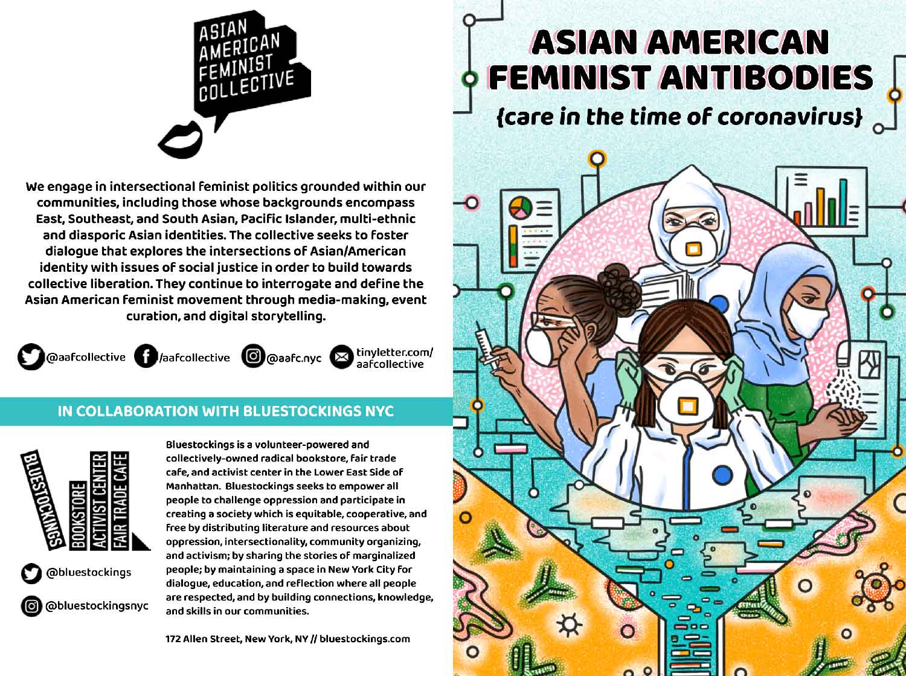
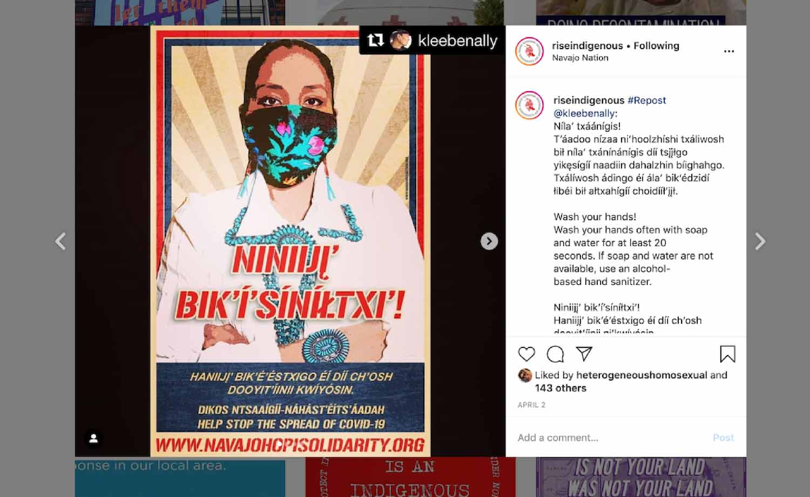
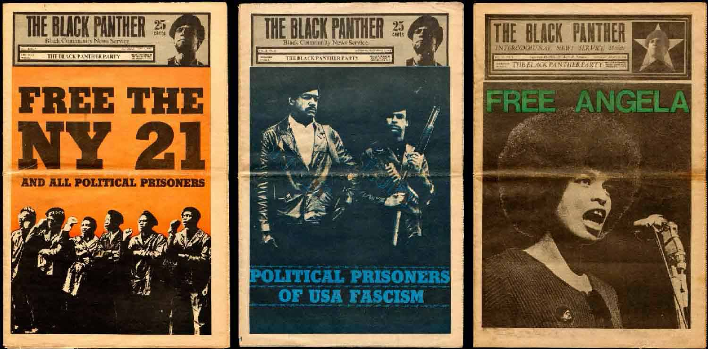
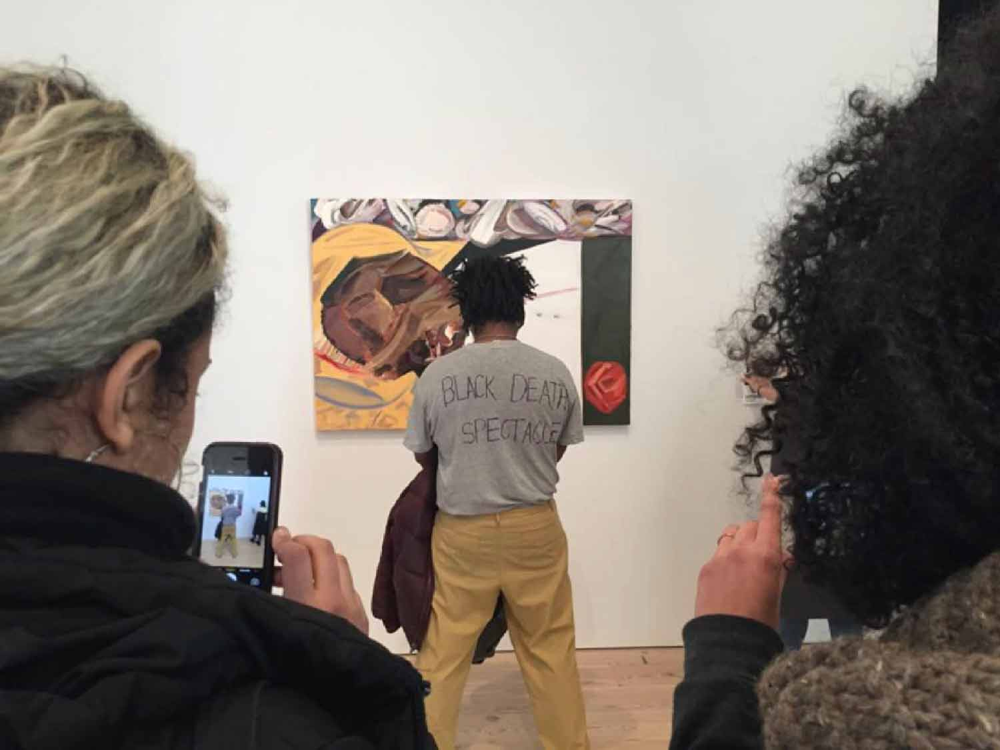
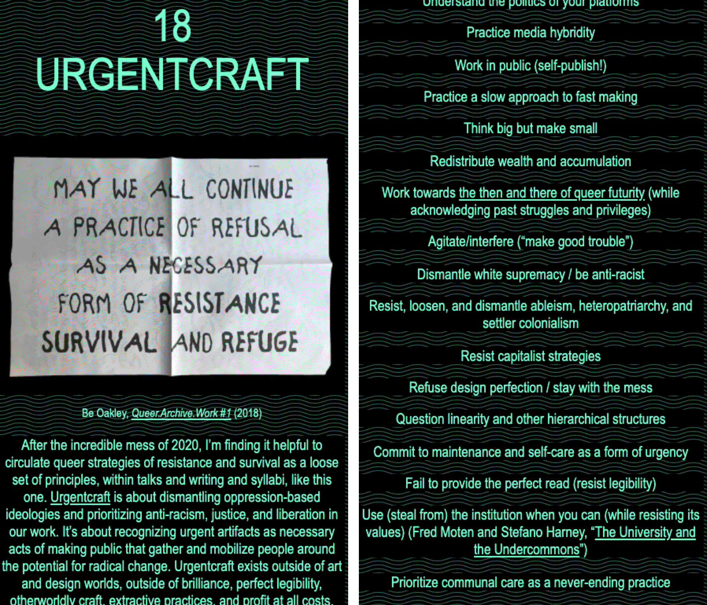

Paul Soulellis
Urgentcraft December 10, 2020 Art Gallery of York University
1
November 9, 2020
2
COVID-19 Mutual Aid (Greater Los Angeles and beyond), Google Doc, March 2020
3
Emergency Fund for Toronto’s Precarious Workers, Google Doc, March 2020
4
Radical Indigenous Survivance and Empowerment (R.I.S.E. Indigenous), April 5, 2020
5
left:
Fredy Perlman, Black & Red
(1969) / center:
Gran Fury, ACT UP
(1987) / right:
Decolonize This Place
(2020)
6

Asian American Feminist Antibodies {care in the time of coronavirus}
,
Asian American Feminist Collective
, zine (2020)
7

Radical Indigenous Survivance and Empowerment (R.I.S.E. Indigenous), April 2, 2020
8
9
@cameronfromwalmart, @forwardlight, @lynnspiracy on TikTok
10
“AOC Among Us FULL STREAM with Ilhan Omar and Twitch Streamers,” Oct 21, 2020
11
COVID-19 Mutual Aid (Greater Los Angeles and beyond), Google Doc, March 2020
12
Tweet, June 24, 2020
13
Tweet, April 2020
14
Cloud 9: Mutual Aid Resources, BUFU community doc, March 2020
15
Press Press, Toolkit for Cooperative, Collective, & Collaborative Cultural Work, fall 2020
16
“All We Have is Each Other: A Guide to Creating Fabric Masks” by @narugit and @yessixunt, April 2020
17
RISD Faculty letter posted at risdARC (RISD Anti-Racism Coalition), July 8, 2020
18
Be Oakley, Queer.Archive.Work #1, 2018
19
Jeffrey Cheung, Unity Press
20
American Artist, streaming performance, March 20, 2020
21
Indigenous Action zine, March 2020
22
Terry Kilby, Robert E. Lee Monument: 6.15.2020, 3D model, 2020
23
Mutual Aid 101, Alexandria Ocasio-Cortez and Mariame Kaba (illustration by Becca Barad)
24
Queer.Archive.Work, Download Library
25

The Black Panther Party newspaper (1967–80)
26
Panthers Fred Bennett and Judi Douglas selling The Black Panther newspaper
27
Panthers selling The Black Panther newspaper in public
28
Kitchen Table: Women of Color Press / The Combahee River Collective
29
IF I DIE OF AIDS — FORGET BURIAL — JUST DROP MY BODY ON THE STEPS OF THE F.D.A., jacket worn by David Wojnarowicz (September 14, 1954 – July 22, 1992), ACT UP demonstration, Food and Drug Administration, Washington, D.C., October 11, 1988. Photo by Bill Dobbs.
30
Gendertrash From Hell 1, Issue 1, Volume 1, April/May 1993
31

Parker Bright, protest at Whitney Biennial (March 17, 2017)
32
Queer.Archive.Work, Providence, RI
33
Nora Khan at work, Queer.Archive.Work, Providence, RI
34
Sloan Leo, artist-in-residence, Queer.Archive.Work, September 2020
35
Sloan Leo, artist-in-residence, Queer.Archive.Work, September 2020
36
Workshop with nicole killian, Queer.Archive.Work, October 2020
37
Artists-in-residence, Queer.Archive.Work, 2020–21
38
Urgentcraft: Radical Publishing During Crisis / A Narrative Syllabus in 19 Parts, (forthcoming 2021)
39

Urgentcraft: Radical Publishing During Crisis / A Narrative Syllabus in 19 Parts, (forthcoming 2021)
paul@soulellis.com
@soulellis